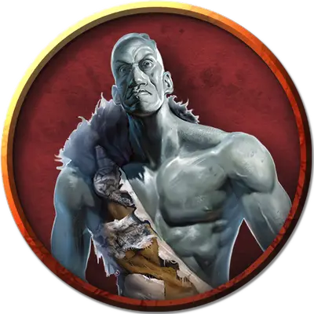

Великан Расщелины Мёртвого Камня
Deadstone Cleft Stone Giant
Огромный Великан, нейтральный

Класс Доспеха 17 (природный доспех)
Хиты 126 (11к12 + 55)
Скорость 40 футов
| мод | спас | ||
|---|---|---|---|
| СИЛ | 23 | +6 | +6 |
| ЛОВ | 15 | +2 | +5 |
| ТЕЛ | 20 | +5 | +8 |
| мод | спас | ||
|---|---|---|---|
| ИНТ | 10 | +0 | +0 |
| МДР | 12 | +1 | +4 |
| ХАР | 9 | −1 | −1 |
Навыки Атлетика +12, Восприятие +4
Чувства тёмное зрение 60 футов, пассивное Восприятие 14, чувство вибрации 30 футов
Языки Великаний
Опасность 7 (2900 опыта)
Бонус мастерства +3
Особенности
Каменный камуфляж. Великан совершает с преимуществом проверки Ловкости (Скрытность), когда пытается спрятаться на каменистой местности.
Оллах Моррач. Великан медитирует 1 час, и в это время он не может делать ничего другого. В конце часа, если его медитация не была прервана, он становится окаменевшим на 8 часов. Спустя это время, он перестаёт быть окаменелым и получает чувство вибрации в радиусе 30 футов, а также особенность Врожденное колдовство на следующие 24 часа.
Врожденное колдовство. Великан может накладывать следующие заклинания без использования материальных компонентов, используя Мудрость в качестве базовой характеристики:
• 3/день: слияние с камнем [meld into stone], изменение формы камня [stone shape];
• 1/день: каменная кожа [stoneskin], остановка времени [time stop].
Новые опции для великанов. Некоторые взрослые каменные великаны любят хватать врагов и запускать их в воздух. Еще они могут катать булыжники по земле, сбивая группы врагов на линии. Эти способности представлены в виде следующих действий: (Storm King's Thunder)
Бросок. Великан пытается швырнуть Маленькое или Среднее существо, стоящее не дальше 10 футов от него. Существо должно совершить спасбросок Ловкости Сл 17 или быть брошенными на 60 футов горизонтально в направлении по выбору великана и упасть ничком, получив дробящий урон 1к6 за каждые 10 футов полета.
Катящийся булыжник. Великан запускает булыжник, чтобы тот катился по земле на 30 футов, образовывая линию в 5 футов шириной. Каждое существо на линии должно пройти спасбросок Ловкости Сл 17 и, в случае провала, получить 22 (3к10 + 6) дробящего урона и быть сбитым с ног.
Действия
Мультиатака. Великан совершает две атаки палицей.
Палица. Рукопашная атака оружием: +9 к попаданию, досягаемость 15 футов, одна цель. Попадание: Дробящий урон 19 (3к8 + 6).
Камень. Дальнобойная атака оружием: +9 к попаданию, дистанция 60/240 футов, одна цель. Попадание: Дробящий урон 28 (4к10 + 6). Если цель — существо, она должны преуспеть в спасброске Телосложения Сл 17, иначе будет сбита с ног.
Реакции
Ловля камней. Если в великана метнут камень или подобный предмет, великан может, если совершит успешный спасбросок Ловкости Сл 10, поймать снаряд и не получить от него дробящий урон.
Описание
Каменные великаны — затворники, тихие и мирные, пока их не беспокоят. Их гранитно-серая кожа, изможденные черты лица и чёрные, запавшие глаза придают каменным великанам суровое выражение. Они любят уединение, скрывая свои жизни и искусство от мира.
Обитатели каменного мира. Домом каменным великанам служат укромные пещеры. Пещерные сети — города, скальные туннели — дороги, а подземные потоки — водные пути. Горные цепи это их материки, с огромными просторами земли между ними, будто океаны, которые каменные великаны редко пересекают.
В своих темных, тихих пещерах каменные великаны безмолвно трудятся над искусной резьбой, измеряя время эхом воды, капающей в подземные пруды. В глубочайших комнатах поселений каменных великанов, далеко от шума летучих мышей и союзных великанам пещерных медведей, находятся святые места, где тишина и тьма совершенны. Камень вбирает в себя самые святые качества в этих пещерных соборах, а их опоры и колонны покрыты такой красивой резьбой, что устыдят легендарных дварфских камнетесов.
Резчики и пророки. Среди каменных великанов ремесло считается величайшим достоянием. Они создают замысловатые фрески на пещерных стенах, раскрашивают эти фрески и занимаются другими видами искусства. Резьбу по камню они почитают величайшим навыком.
Каменные великаны стремятся к выявлению форм из необработанного камня, которые, как они верят, раскрывают смысл, вдохновленный их богом Скореусом Камнекостным. Великаны назначают лучших резчиков своими лидерами, шаманами и пророками. Святые руки такого великана во время работы становятся руками бога.
Изящные атлеты. Несмотря на большой размер и мускулатуру, каменные великаны гибки и изящны. Умелые метатели камней занимают высокое положение в орднунге великанов, проверяя и показывая свое умение метать и ловить огромные валуны. Такие великаны занимают передовые ранги, когда племени надо защищать свой дом или атаковать врагов. Однако, даже в бою главное — мастерство. Метание булыжника каменным великаном — проявление не просто грубой силы, но ошеломляющего равновесия и атлетизма.
Мечтатели под открытым небом. Каменные великаны воспринимают мир за пределами своих подземных жилищ как царство снов, где ничто по-настоящему не истинно, и не реально. На поверхности они ведут себя так, как гуманоиды могут вести себя в своих снах, не отдавая особого отчета в своих действиях и никогда не доверяя полностью тому, что видят или слышат. Обещание, данное над землей, не обязательно надо сдерживать. Оскорбление можно нанести без извинений. Убийство добычи или разумного существа не вызывает вины в мире грез под открытым небом.
Некоторые великаны, не обладающие грацией атлетов или художественным мастерством, живут на задворках общества, служа племени охранниками границ или скитающимися охотниками. Когда нарушители проникают слишком глубоко на горную территорию клана каменных великанов, эти охранники встречают их летящими булыжниками и ливнем расколотого камня. Выжившие после такого рассказывают истории о жестокости каменных великанов, так и не поняв, как мало эти громилы, проживающие в мире грез, походят на свой тихий артистичный род.
См. дополнительно статью: "Бестиарий: Великаны"